uBITX CEC Desktop
A desktop front panel for a uBITX running KD8CEC's firmware, with an SDR alongside as the receiver and waterfall.
The app talks to the radio the way KD8CEC's Nextion display does, so everything the radio reports (frequencies, mode, RIT, split, lock, the keyer settings) shows here, and everything you change here goes to the radio. If an SDR program is running, the app keeps it tuned to the radio, so you can listen and watch the band through the SDR while the uBITX transmits.
1. Getting started
What you need
- A uBITX (any version) running KD8CEC firmware 1.2, the Nextion build. See Installing KD8CEC 1.2.
- A USB-to-TTL serial adapter, wired to the radio where a Nextion display would plug in. See The USB-to-TTL adapter.
- A computer running macOS, Windows or Linux.
- Optional: an SDR (an RTL-SDR, for example) with one of these programs: SDRoxide Brown, SDRoxide, SDR++, Gqrx or SDRangel. Without one the app still runs the radio; you listen through the radio's own speaker.
Installing KD8CEC 1.2
KD8CEC's firmware 1.2 (it reports itself as +v1.200) replaces the uBITX's original Raduino software. It must be the build for a Nextion display: that's the protocol the app speaks. The source and ready-built files are in KD8CEC's repository, github.com/phdlee/ubitx, and his notes are on hamskey.com.
Option A: a ready-built file
Download the file for your uBITX from the app's Releases page on GitHub (github.com/AJ6CU/ubitx_cec_desktop_nextgen), or from the firmware folder there:
- uBITX V3 or V4:
KD8CEC_1.20_Nextion_57600_uBITX_V3_V4.hex - uBITX V5 or V6:
KD8CEC_1.20_Nextion_57600_uBITX_V5_V6.hex
Then upload it to the Raduino's Arduino Nano with avrdude, the program the Arduino IDE itself uses. Connect a USB cable to the Nano's own USB port (not the USB-to-TTL adapter), close the app and anything else that might hold the port, and follow the steps for your computer.
-b 115200. Older ones, and many clones, have the old bootloader and take -b 57600. Try 115200 first; if avrdude says not in sync or programmer is not responding, run the same command again with -b 57600. Neither speed can harm the Nano.macOS
- Install avrdude with Homebrew (
brew.shif you don't have it):brew install avrdude - Find the Nano's port: run this, plug the Nano in, and run it again. The new name is the Nano (a clone usually shows as
/dev/cu.wchusbserial…or/dev/cu.usbserial-…):ls /dev/cu.* - Upload, with your port and file in place of these:
cd ~/Downloads avrdude -c arduino -p m328p -P /dev/cu.wchusbserial1410 -b 115200 -D -U flash:w:KD8CEC_1.20_Nextion_57600_uBITX_V5_V6.hex:i
Linux and Raspberry Pi OS
- Install avrdude, and let your user open serial ports (log out and in again after the second command):
sudo apt install avrdude sudo usermod -aG dialout $USER - Find the Nano's port: it is usually
/dev/ttyUSB0(a clone) or/dev/ttyACM0. This shows the latest:
On Ubuntu, if nols /dev/ttyUSB* /dev/ttyACM*ttyUSBport appears for a clone Nano, the braille service brltty has taken it:sudo apt remove brltty, then unplug and plug the Nano in again. - Upload:
cd ~/Downloads avrdude -c arduino -p m328p -P /dev/ttyUSB0 -b 115200 -D -U flash:w:KD8CEC_1.20_Nextion_57600_uBITX_V5_V6.hex:i
Windows
- Download avrdude for Windows from
github.com/avrdudes/avrdude/releases: the file endingwindows-x64.zip. Extract it, for example toC:\avrdude, and copy the.hexfile into the same folder. - Find the Nano's port: plug it in and open Device Manager → Ports (COM & LPT). A clone shows as USB-SERIAL CH340 (COM5) or similar; note the COM number. If it shows with a warning sign, install the CH340 driver (search "CH340 driver" on the WCH site).
- Open PowerShell and upload, with your COM port and file:
cd C:\avrdude .\avrdude.exe -c arduino -p m328p -P COM5 -b 115200 -D -U flash:w:KD8CEC_1.20_Nextion_57600_uBITX_V5_V6.hex:i
KD8CEC's own uBITX Manager (Windows) can also upload a hex file, if you already use it.
A good upload ends with avrdude done. Thank you. after writing and then verifying the flash.
Option B: build it yourself
- Install the Arduino IDE, download KD8CEC's source (
github.com/phdlee/ubitx, release 1.20), and openubitx_20/ubitx_20.ino. - In
ubitx.h:- make sure
#define UBITX_DISPLAY_NEXTIONis the one display line not commented out; - set
UBITX_BOARD_VERSIONfor your radio: 4 for a uBITX V3 or V4, 5 for a V5 or V6; - comment out
#define USE_I2CSMETER(line 42): put//in front of it. That line is for an extra S-meter Nano on the I2C bus, which the app doesn't use; without it the firmware reads the radio's own S-meter sensor; - switch the feature list to the Nextion one. Comment out the "Enable all features" list (lines 62–83 of the unchanged file, from
#define FN_BANDto#define FN_TXONOFF): put/*on a new line before it and*/on a new line after it. Then turn on the "Recommended for Nextion, TJC LCD" list further down: delete the/*on the line above//Recommended for Nextion, TJC LCD 88%, and the*/after its last line,#define FN_TXONOFF 1 //70. (In the unchanged file those are lines 137 and 161; after adding the two lines above, 139 and 163.) With every feature on, the firmware is too big for the Nano's memory and the upload fails.
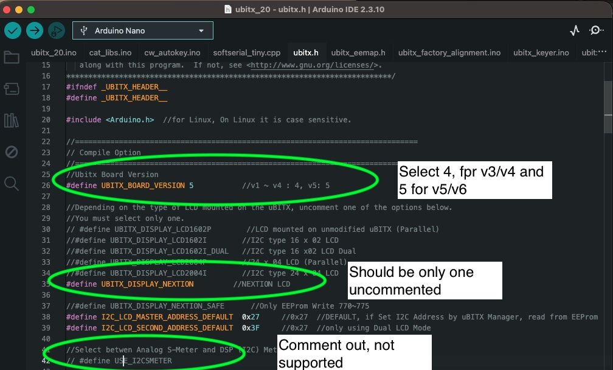
Screenshot to come: the top of ubitx.h.ubitx.h, the top:UBITX_BOARD_VERSION(4 for a V3/V4, 5 for a V5/V6),UBITX_DISPLAY_NEXTIONthe only display left on, andUSE_I2CSMETERcommented out. Screenshot to come: the Enable all features list commented out.
Screenshot to come: the Enable all features list commented out.The “Enable all features” list, now between /*and*/: with it on, the firmware does not fit in the Nano. Screenshot to come: the Nextion feature list turned on.
Screenshot to come: the Nextion feature list turned on.The “Recommended for Nextion, TJC LCD” list, with its /*and*/removed. - make sure
- In
ubitx_lcd_nextion.ino, changeSWSerial_Begin(9600);toSWSerial_Begin(57600);, the speed the app uses.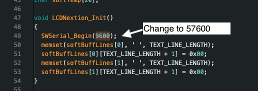
Screenshot to come: the Nextion speed in ubitx_lcd_nextion.ino.ubitx_lcd_nextion.ino, line 49: the Nextion line's speed, 9600 to 57600. - Under Tools, choose the board Arduino Nano, the Nano's Port, and the Processor that matches its bootloader: ATmega328P for the new bootloader (uploads at 115200), ATmega328P (Old Bootloader) for the old one (57600). If the upload says not in sync, try the other. Then Upload.
 Screenshot to come: the Arduino IDE's Tools menu.
Screenshot to come: the Arduino IDE's Tools menu.Tools: Board Arduino Nano, the Nano's Port, and the Processor: ATmega328P for the new bootloader, ATmega328P (Old Bootloader) for the old one.
After flashing
Power the radio off and on. Your calibration survives a firmware update; if it was lost, use Backup and restore… with Config file → To the radio. When the app connects, Setup → About… shows the firmware version the radio reported.
The USB-to-TTL adapter
The app connects where a Nextion display would: a USB-to-TTL serial adapter plugged into the computer, with its wires on the Raduino's Nextion serial lines. It is not the Nano's own USB port; that one is for flashing firmware.
Four wires, the same four a Nextion display uses. The easiest lead is the Nextion's own cable: unplug it from the display and plug that end into the adapter. Its colours are the Nextion's standard ones, and the pictures below use them too:
| Wire | What it carries | Raduino pin, V3–V5 | Raduino pin, V6 | CP2102 | FT232RL |
|---|---|---|---|---|---|
| Black | Ground | 1 | 2 | GND | GND |
| Red | The radio's +5 V | 2 | 1 | VCCIO | VCC |
| Blue | What the radio receives (the Nano's D8) | 4 | 11 | TXD | TXO |
| Yellow | What the radio sends (the Nano's D9) | 6 | 5 | RXD | RXI |
The adapter's TX goes to what the radio receives on, and its RX to what the radio sends on: each one's output is the other's input.
At the adapter
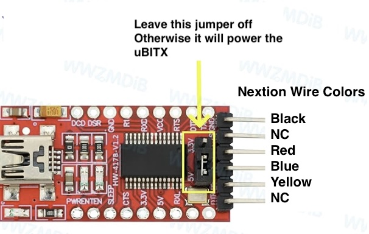
At the radio
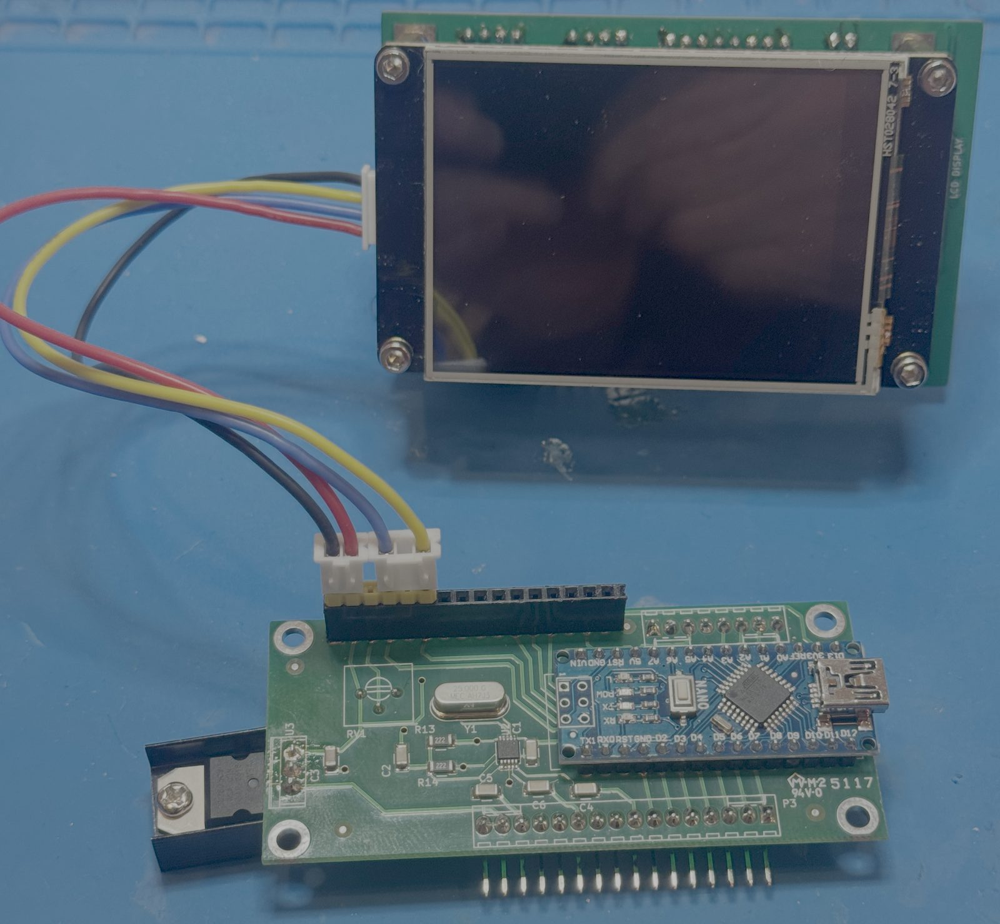
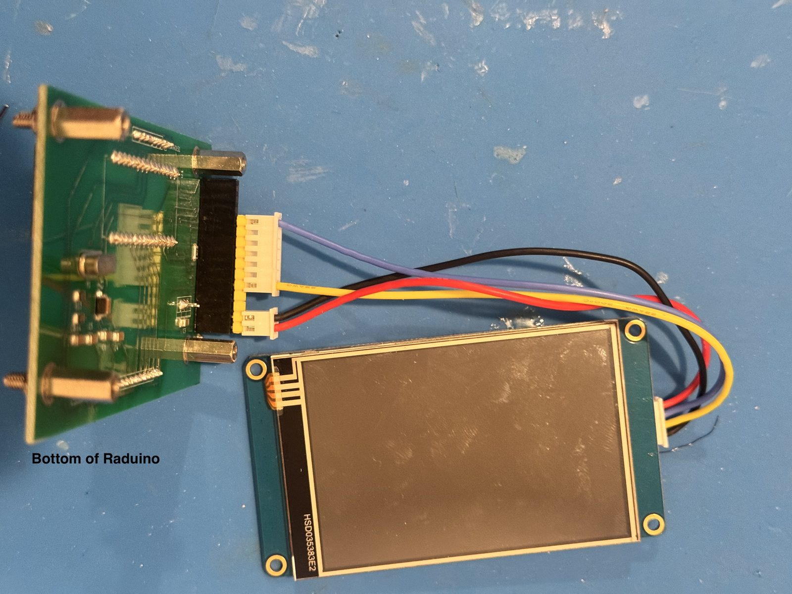
The wiring, pin by pin

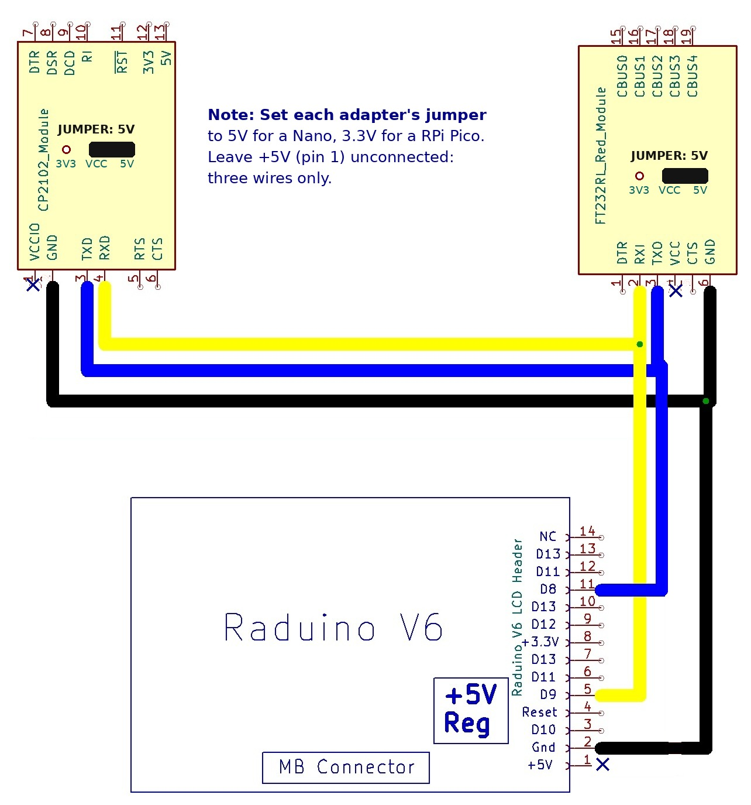
First start
- Plug in the adapter and switch the radio on.
- Start the app. With no radio chosen yet, it opens on Setup → Station & Radio.
- In the Radio group, choose the adapter under Port. Ports are labelled by their chip (FTDI, CH340…). If yours isn't listed, tick show all, or press Refresh after plugging it in.
- Leave Speed as it is unless your firmware was built for another, and press Connect.
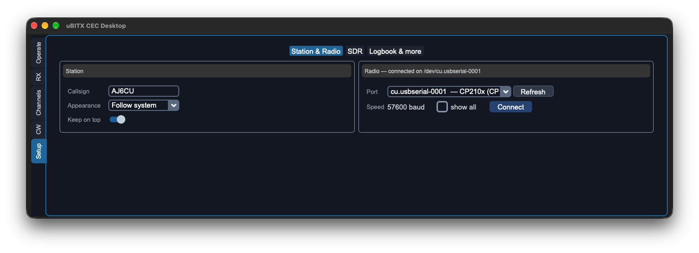
What connecting does. The app restarts the radio, because the radio sends all of its values as it starts up, and that's how the app learns them. It then sets the radio's tuning step to its finest, so a 10 Hz step isn't rounded away. The radio always starts on VFO A.
If some values don't arrive, the app restarts the radio once or twice more to ask again. A radio that takes a few seconds to boot is waited for; one that never answers is reported as "not answering: is it switched on?".
Setting up an SDR
An SDR is optional. With one, the SDR program is the receiver: you hear the band through it and see its waterfall, while the uBITX does the transmitting. The app keeps the SDR on the radio's frequency, mode, filter, RIT and, with SDRoxide Brown, VFO A/B and split.
In the app
- Setup → SDR, Software: choose your program. -none- is the default, and with it Connect and the address fields stay greyed.
- Address and Port fill in with the program's usual ones; change them only if you changed them in the program.
- Tick Start it if the app should start the program for you. The app closes a program it started when it quits, and leaves alone one that was already running.
- Press Connect. The line under the group lists what the program lets the app control.
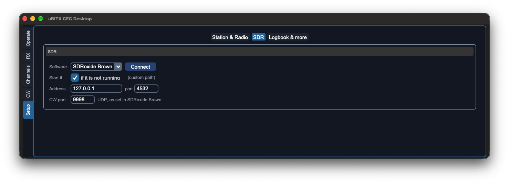
If the program isn't where the app expects it, set its location in SDR settings…; "custom location set" then shows beside Connect.
In the SDR program
| Program | How the app talks to it | What to turn on |
|---|---|---|
| SDRoxide Brown (recommended) | Hamlib (rigctl), port 4532 | Settings ▸ Servers: the Hamlib server. For CW decoding in the app, also Decoded CW over UDP (port 9998). Brown gives the most: VFO A/B, split, RIT, NB/NR/notch, APF, squelch, AGC, RF gain, the span. |
| SDRoxide (1.6.11 or later) | Hamlib (rigctl), port 4532 | Settings ▸ Servers: the Hamlib server; Decoded CW over UDP on port 9999. |
| SDR++ | Hamlib (rigctl), port 4532 | The Rigctl Server module, started. SDR++ gives no signal reading, so the S-meter stays empty. |
| Gqrx | Remote control, port 7356 | Tools ▸ Remote control. |
| SDRangel | REST API, port 8091 | A device set with the RTL-SDR; the WDSP receiver as its first channel; a Channel Power channel for the S-meter; the Morse Decoder feature for CW. Save the setup in SDRangel. |
2. Operate
The front panel. Receive is on the left, transmit on the right, each marked by its blue RX or TX badge and the VFO it's on.
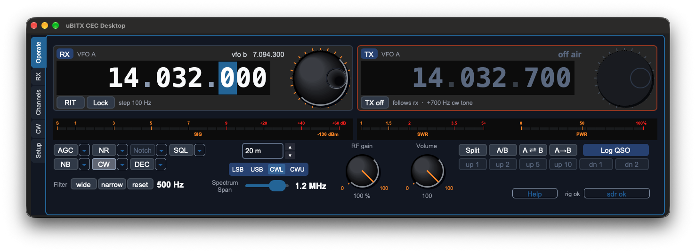
Receive and transmit
- RX panel (left). The frequency you're listening on. Tune with the knob, or click a digit to choose the step and scroll over it. RIT turns receive incremental tuning on; the note beside it shows the offset and the frequency you'll transmit on. Lock is the radio's lock: everything that would change the radio or the SDR is greyed while it's on.
- TX panel (right). The frequency you'll transmit on, with off air / on air. It shows a different VFO only in split. TX off is KD8CEC's practice mode: the radio keys everything but the transmit relay, so nothing goes out. Use it to practise CW.
Meters
SIG is the signal strength, in S-units and dBm. With an SDR it's the SDR's reading. Listening through the radio, it's the radio's S-meter sensor, which only means something once its levels are set (Setup → Logbook & more → EEPROM settings…). SWR and PWR wait for a sensor board.
Listening aids
AGC, NR, Notch, SQL, NB, CW (the peak filter) and DEC (the CW decoder) are the SDR's. Click a lamp to switch it; click the arrow beside it for its settings. A pop-up closes on Escape or a click elsewhere. Pin it to keep it open; pinned pop-ups come back where you left them. A lamp is greyed when the SDR can't do it, and says why. Notch is greyed in CW, where it would remove the signal.
With DEC on, in CW, decoded text runs along the bottom of the tab.
Filter, band, mode and span
- wide / narrow step the SDR's filter; reset returns to the default for the mode (Setup → Logbook & more → SDR settings…). The width is shown beside them.
- The band box steps through the ham bands; off any band it shows "—".
- LSB USB CWL CWU set the radio's mode; the SDR follows.
- Spectrum Span sets how wide a slice the SDR samples, where it allows (SDRoxide Brown, SDRangel).
RF gain and volume
RF gain is the SDR's front-end gain. Volume is the SDR's audio; double-click it to mute and unmute. Listening through the radio, volume is the radio's own knob, so this one is greyed.
VFOs and split
| Button | What it does |
|---|---|
| Split | Transmit on the other VFO. |
| A/B | Select the other VFO. |
| A ⇄ B | Exchange the two VFOs' contents: frequency, mode and any RIT. |
| A → B | Copy A onto B. |
| up 1 … dn 2 | Split offsets, in kHz, as a DX station calls them: transmit that far from where you're receiving. Pressing up 5 twice leaves you 5 up, not 10. |
| Log QSO | Log a contact (Setup → Logbook & more says where). |
RIT and VFOs
- RIT off drops the offset, and RIT on always starts at +0.
- Each VFO keeps its own RIT. Switch away and back, and it returns.
- In split, RIT works on the receive VFO; the app keeps it there itself, because the firmware ignores split on transmit while its own RIT is on. Turning split off hands the RIT back to the radio.
- In split, each VFO transmits on its receive frequency, RIT offset included.
Status
Help opens this page. rig ok is the radio's connection. The SDR button says sdr ok, or, in an alert colour, sdr — reconnect (press it to try again) or no sdr — choose one.
3. RX

Listen through chooses where the audio and the signal reading come from: Rig (the radio's speaker and S-meter sensor) or SDR. Listening through the rig, an SDR that has its own mute is muted.
ATT and IFS
These belong to the radio's own receiver, so they work only while you listen through the rig.
- ATT reduces strong signals by shifting the radio's first IF: 0 (off) to 250, in steps of 5. Higher is quieter. Switching it on from 0 starts at your last level (or 50).
- IFS (IF shift) moves the passband, from −20000 to +20000 Hz in steps of 50. Moving the slider turns IFS on.
A slider is sent to the radio once you stop dragging; the display then shows what the radio reports back.
4. Channels
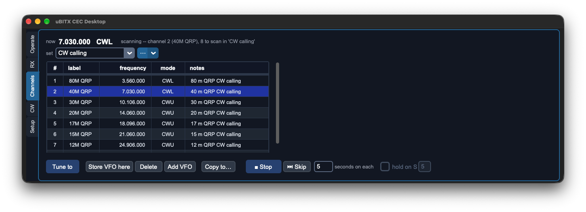
Two kinds of channel list, shown the same way:
- Radio (20 slots) is the radio's own memories, read the first time you open the tab. Change them here, then Write to radio; Read from radio reads them again.
- Channel sets are the app's, as many as you like, saved as you edit. The app starts you with three: Time signals (WWV and CHU), CW calling (the QRP CW frequencies) and FT8.
Working with channels
- Tune to puts the radio on the chosen channel; the SDR follows.
- Add VFO adds where you are now; Store VFO here overwrites the chosen channel with it; Clear empties it; Copy to… copies channels to another set.
- The ⋯ menu: New set…, Duplicate…, Rename…, Delete set…, and, for the radio's memories, Save as a set….
Scanning
▶ Scan steps through the set, seconds on each. With hold on S[n] ticked, a channel whose signal reaches that S-level is held while it lasts and left 3 seconds after it drops. ⏭ Skip moves on now, held or not. Without a signal reading (SDR++), the scan goes by time only.
channels.json.bak in ~/.ubitx_cec_desktop/. To go back: quit the app, copy channels.json.bak over channels.json, and start again.5. CW
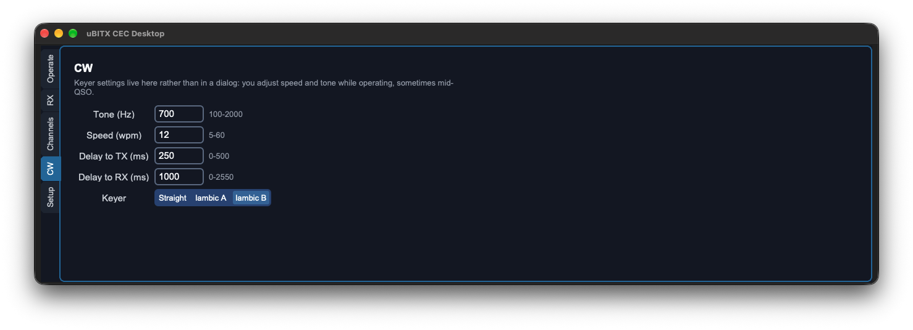
The radio's keyer settings, as the radio reports them ("--" until it has).
| Setting | Takes effect |
|---|---|
| Keyer: Straight, Iambic A or Iambic B | At once |
| Speed (wpm), 5–60 | At once |
| Tone (Hz), the sidetone and CW offset | After the radio restarts |
| Delay to TX (ms), key down to the first element | After the radio restarts |
| Delay to RX (ms), the last element back to receive | After the radio restarts |
Type a value and press Return, or click elsewhere. It goes to the radio's memory. A value waiting for a restart says so, and a Restart rig button appears; the app never restarts the radio on its own. Values are kept as the radio stores them, so 45 wpm may read back as 44.
6. Setup
Setup has three sub-tabs across its top: Station & Radio, SDR and Logbook & more. When the radio isn't answering, the app opens on Station & Radio.
Station & Radio
The Station and Radio groups side by side. See First start for the radio's port.
Station
- Callsign is the radio's, from its memory. Change it here and it's written to the radio, shown at start-up after a restart.
- Appearance: dark, light, or following the system (the default). On Linux, where the desktop's setting can't always be read, choose Dark or Light.
- Keep on top keeps the app's window above other windows, on by default. Without it, clicking the SDR's waterfall brings the SDR's large window to the front and the app disappears behind it.
Radio
The adapter's port and speed, and Connect. See First start.
SDR
The program, whether to start it, its address and port, and the CW port where it sends decoded CW. See Setting up an SDR.
Logbook & more

Logbook
Whether QSOs are logged, the logbook file, its format and its backup.
Other settings
| Button | What it's for |
|---|---|
| EEPROM settings… | Settings kept in the radio's memory: show the callsign at start-up, the S-meter reports switch, and the eight S-meter levels for the radio's S-meter sensor. Levels all at 0 read every signal as about S9; set them if you listen through the radio's sensor. |
| Machine settings… | How the app paces commands to the radio (the command headroom), and, under Advanced, the link's timings, with a reset. Leave these alone unless the radio misses commands. |
| Backup and restore… | The radio's calibration and CW settings side by side with your config file and the radio's factory copy: From the radio → Config file, Config file → To the radio and Factory → To the radio. It lists the changes and asks before writing. Most take effect after a restart, and the dialog offers one. The factory copy itself is never written. |
| SDR settings… | The SDR program's location, and the default filter widths for each mode. |
| About… | Versions, including the firmware the radio reported, and where the settings are kept. |
Everything the app keeps is in one folder, ~/.ubitx_cec_desktop/: settings, channel sets, window position, pinned pop-ups, and your own SDR program and control descriptions.
7. When things go wrong
"The port opened but the radio is not answering"
Is the radio on, and are the adapter's TX and RX the right way round (adapter RX to the radio's send line)? The app waits up to 10 seconds for a radio that's still starting.
The console fills with the same report, over and over
Something is feeding the radio's serial input. A monitoring USB-to-TTL adapter on the same lines does it. Unplug it, or connect only its GND and RX; power-cycling the adapter clears it.
The SDR doesn't follow
Check the SDR button on Operate. If it says reconnect, check the program's server setting (see Setting up an SDR) and press it.
Seeing what the app is doing
Start the app from a terminal with UBITX_SDR_TRACE=1 set, and the console shows every command sent to the SDR and every change it reports. That's the first thing to send with a problem report.
uBITX CEC Desktop. KD8CEC firmware by Ian Lee, KD8CEC.